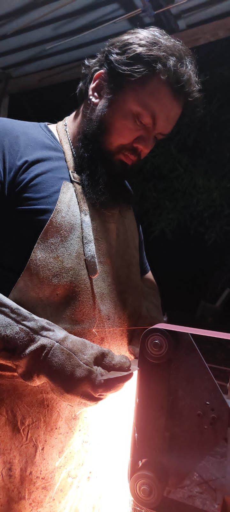

Forjando
aço
e alma
Cada lâmina é uma obra única — temperada no fogo, moldada pela mão e pelo tempo.
O acervo de lâminas
Peças únicas, criadas com aço de alta qualidade e acabamento artesanal minucioso. Toque em uma peça para ver de perto.
Ferro, fogo
& tradição
Por trás de cada faca existe um processo meticuloso: o aço é aquecido até a temperatura exata, forjado golpe a golpe, temperado para obter a dureza ideal e, por fim, afiado até o gume perfeito.
V. R. Forge nasce da paixão pela cutelaria tradicional — onde a paciência, o domínio do fogo e o respeito pelo material resultam em peças que duram gerações.
Como encomendarComo encomendar
Cada faca é feita para quem vai usá-la. O processo é simples e acontece todo pelo WhatsApp.
-
I
Conversa
Conte para que vai usar a faca, o estilo que gosta ou mande uma referência.
-
II
Projeto
Definimos juntos o modelo, o aço, o cabo e as medidas da peça.
-
III
Forja
A lâmina é forjada, temperada, afiada e recebe o acabamento à mão.
-
IV
Entrega
Sua peça única chega pronta para durar gerações.
Vamos forjar a sua?
Tire dúvidas, peça um orçamento ou acompanhe o trabalho na oficina.